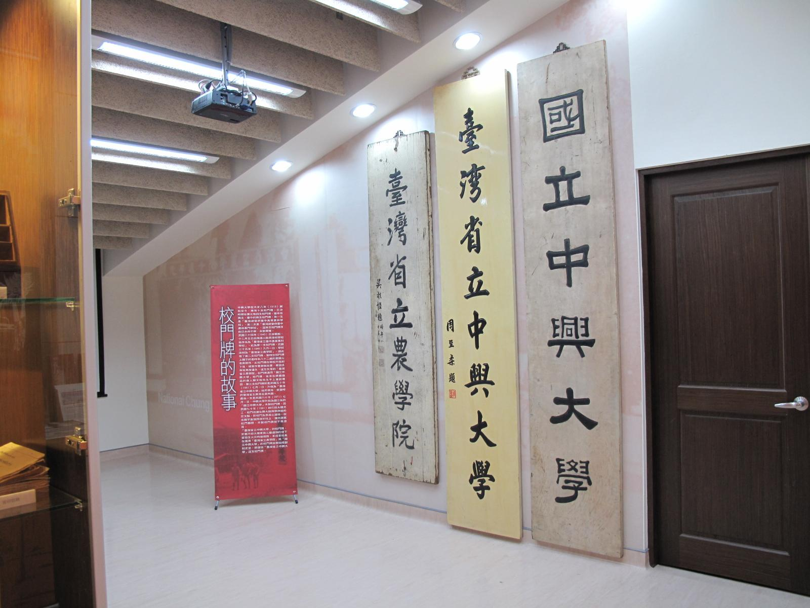

聯絡我們
維護單位： 校史館組
電話： (04)22840290#412
傳真： (04)22873454
E-mail： nchuir@gmail.com
地址： 台中市402南區興大路145號 中興大學圖書館校史館組
本校歷史悠久，1919年日本當局為開發臺灣農林資源、培養農林人才，乃在臺北設立「臺灣總督府農林專門學校」，1922年改制為「臺灣總督府高等農林學校」，1928年併入「臺北帝國大學」（今國立臺灣大學），為附屬農林專門部。1943年獨立設校，名為「臺灣總督府臺中高等農林學校」，並遷至臺中頂橋子頭。戰後，更名為「臺灣省立臺中農業專科學校」，1946年改為「臺灣省立農學院」。1961年增設理工學院，並與臺北的法商學院（原省立地方行政專校）合併成為「臺灣省立中興大學」。1971年改制成「國立中興大學」，發展迄今，已成為具有文、農資、理、工、生命科學、獸醫、管理、法政等八大學院的綜合型大學，在中部地區首屈一指。然而，長期以來並未有專門場所收藏並展示與學校歷史相關的文物，直到2009年，為慶祝九十週年校慶，校史館才告成立。
校史館位於惠蓀堂一樓，佔地約一百二十坪，耗資七百餘萬元佈置而成，但因人手不足，僅採取預約開放機制，多數師生難以一窺堂奧。去年(2011) 8月，圖書館校史館組成立，決定在增強防護措施與更換部分展品後，定時開放校史館，如今總算大功告成。
校史館展區為長條型，以「憶的長廊」為設計概念，置身其中猶如走進時光隧道，可親眼見證學校的演變。在展品部分，首先，保存有學校各時期的校門牌，包括「臺灣省立農學院」、「臺灣省立中興大學」、「國立中興大學」，有些是從標購廢品商人處重新尋回的，得之極為不易。其次，收藏三本日治時期畢業紀念冊的複製品，是極為珍貴的校史文物。再者，有專區介紹歷任校長、學校四季的代表植物、各時期的空照圖與校園建築、過往學生生活的樣貌等等。此外，展示兩臺早期教學用的顯微鏡，其中一臺係1959年時，以一萬美金由臺灣省警務處刑事警察大隊購入，曾協助警方偵破東勢女童命案等重大刑案。總之，凡是本校教職員生，不可不到此一訪，校史館竭誠歡迎您。
